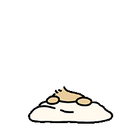

玻璃栈道上的小耳朵骑士，你站在云端回眸的瞬间，我的世界就定格成了最清澈的童话。纵使脚下万丈斑斓，只要有你攥着衣角，连心跳声都是最安心的节拍。

玻璃栈道上的小耳朵骑士，你站在云端回眸的瞬间，我的世界就定格成了最清澈的童话。纵使脚下万丈斑斓，只要有你攥着衣角，连心跳声都是最安心的节拍。

毛衣的褶皱藏着我们的温度，项链摇晃的微光里住着心跳的频率。即使车窗外的风景都虚化，你发梢卷起的弧度永远是我目光的锚点。.


绷带裹不住你眼里的星河，这副眼镜倒映的，是我正在笨拙却坚定地学着把心跳缠成守护你的蝴蝶结。

你指尖的爱心魔法刚点亮这个角落，Hello Kitty的甜度就输了三分——原来蕾丝褶皱里藏着的，是我们用晚安吻称量过温柔时光。